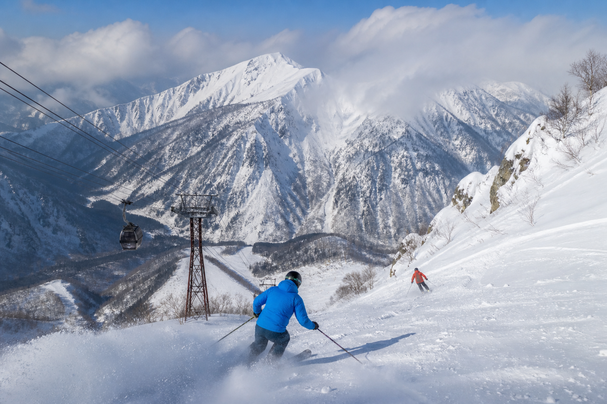
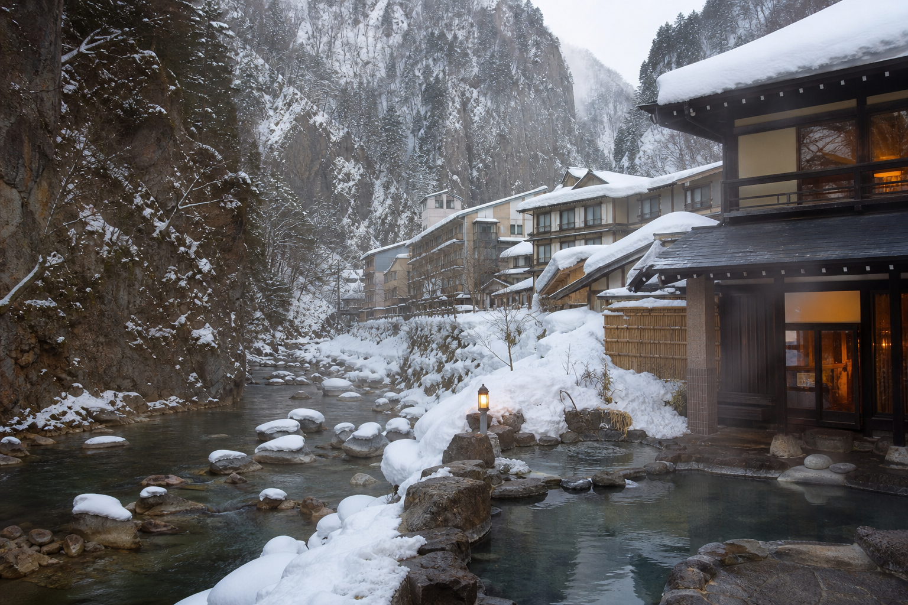

付近の温泉
層雲峡温泉郷、
峡谷の湯めぐり
層雲峡峡谷沿いに温泉旅館が立ち並ぶエリア——黒岳ロープウェイ山麓から徒歩圏の宿も多く、日帰り入浴で雪見風呂を楽しめます。
滑走後は温泉街で温まり、翌日は旭岳や層雲峡観光と組み合わせる広域周遊も可能です。
アクセス・周辺情報
Access
付近の温泉
層雲峡峡谷沿いに温泉旅館が立ち並ぶエリア——黒岳ロープウェイ山麓から徒歩圏の宿も多く、日帰り入浴で雪見風呂を楽しめます。
滑走後は温泉街で温まり、翌日は旭岳や層雲峡観光と組み合わせる広域周遊も可能です。
アクセス・周辺情報
Access